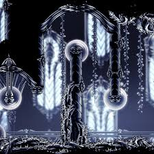

Palacio Blanco

El Escondite del Wyrm
El Palacio Blanco fue una vez el centro físico de Hallownest, ubicado en la Cuenca Antigua. Sin embargo, tras la caída del reino, el Rey Pálido lo desvaneció de la realidad física, ocultándolo dentro de la mente de uno de sus sirvientes muertos. Para acceder a él, el Caballero debe poseer el Aguijón Onírico Despertado (1800 de esencia) y golpear el cadáver de un Moldura Real (Kingsmould).
El Requisito de la Esencia
Solo aquellos que han recolectado suficiente esencia pueden romper el sello que protege la memoria del Palacio. Es una prueba de voluntad antes de enfrentar el juicio final.
Arquitectura de Castigo
A diferencia de la mayoría de las áreas de Hallownest, el Palacio Blanco no se enfoca en el combate de enemigos, sino en la precisión del movimiento. El palacio está repleto de sierras circulares, pinchos retráctiles y espinos brillantes.
Defensas Automatizadas
Las sierras circulares son el elemento más icónico (y odiado) del Palacio. Representan la obsesión del Rey por la seguridad y la perfección, convirtiendo su hogar en una trampa mortal para cualquier intruso.
Los Molduras Alados
Criaturas de vacío y porcelana que sirven como plataformas móviles. Son esenciales para navegar por los vastos salones del palacio donde no hay suelo firme.
El Sendero del Dolor
Oculto tras una pared rompible, se encuentra el desafío de plataformas más extremo de todo el juego. El Sendero del Dolor es un área opcional que pone a prueba la maestría absoluta del jugador con el dash, el doble salto y el pogo.
"Para ver el recuerdo oculto, uno debe sufrir el camino más largo."

El Trono Vacío
Al final del recorrido, el Caballero llega a la cámara real. Allí, encuentra el cadáver del Rey Pálido sentado en su trono, rodeado de una luz blanca perpetua. Al golpear el cuerpo, se obtiene la mitad del amuleto Alma de Rey.
Revelación de Lore
En la cima del palacio, el Caballero puede ver una breve visión del Rey con el Receptáculo Puro, confirmando que el Rey sentía afecto por su creación, lo que finalmente causó la impureza del sello y la caída de Hallownest.